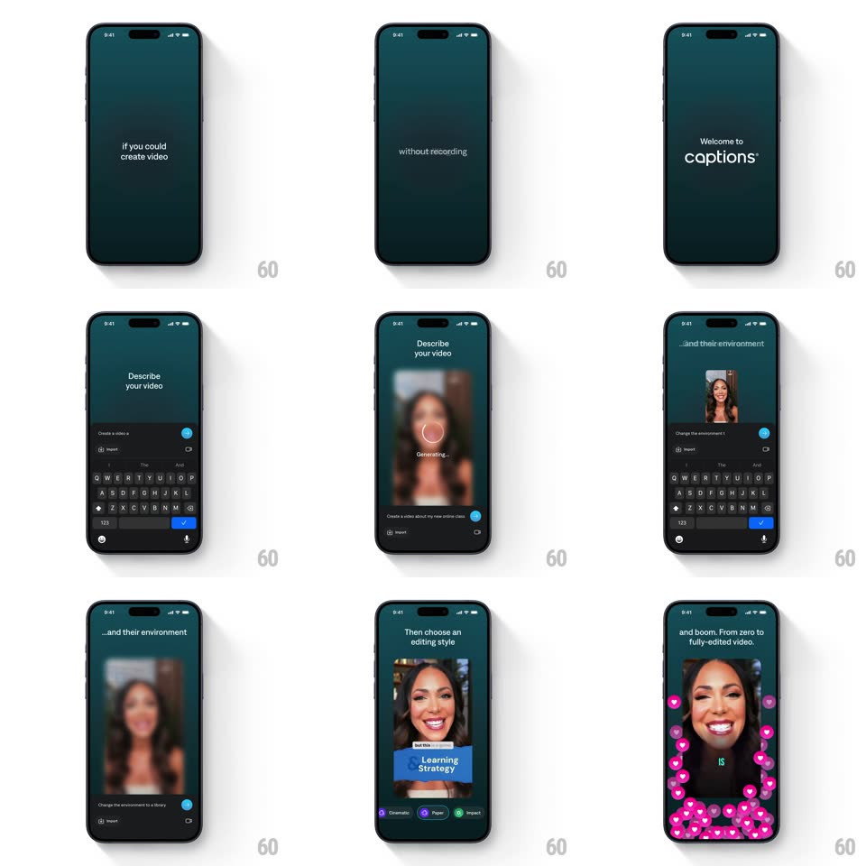

Media
Frame-by-frame

Rebuild this animation 1:1: Captions' onboarding intro - crossfading teaser lines, a type-it-yourself prompt over the keyboard, a blurred Generating state, editing-style chips, and a final preview with popping caption words.

Rebuild this animation 1:1: Captions' onboarding intro - crossfading teaser lines, a type-it-yourself prompt over the keyboard, a blurred Generating state, editing-style chips, and a final preview with popping caption words.
## Integration
Integration: stack-agnostic spec - springs given as stiffness/damping, timed motions as duration + curve; map every value to your framework and animation library of choice.
## Scene
Dark teal onboarding flow: teaser lines ("Imagine", "if you could create video", "or editing") centered on empty screens; "Welcome to captions" with the keyboard up; the "Describe your video" step with an input field, Import button, and keyboard; a creator's sample video appearing above; "...and their environment" with a blurred "Generating..." spinner over the video; "Then choose an editing style" with chips (Cinematic, Paper, Impact) under the video; and the final frame with big animated captions (a word highlighted as "THIS").
## Motion spec
Pattern: text crossfade intro with simulated typing, blur loading, and popping captions.
- Teaser lines crossfade in sequence (each fades in 400ms, holds ~900ms, fades out 300ms) - one line at a time, perfectly centered.
- "Welcome to captions" rises with the keyboard (250ms, tracking the keyboard's own spring); the input placeholder types itself character-by-character (~40ms per char, slight random jitter) with a blinking caret.
- The sample video fades in above the input (16px rise, 350ms); moving on, the video blurs (radius 0 -> 14px, 400ms) as "Generating..." and the spinner fade in over it (250ms).
- The blur lifts (400ms) to reveal the styled result and the editing-style chips stagger in below (60ms apart, 12px rise, 250ms each).
- On the final preview, caption words pop word-by-word with the video: each word scales 0.8 -> 1 (spring ~450/16, ~200ms) with the active word flashing its highlight color.
## Calibration
- The typing simulation must feel human: jittered cadence, never a linear character dump.
- Generating is a real blur on the actual video, not an overlay card.
## Reduced motion
Lines and steps crossfade (250ms) without typing cadence or word pops; captions render statically.
## Don't miss
- The keyboard is part of the choreography - screens with input keep it up, teaser screens keep it away.
- The highlighted caption word uses the selected style chip's accent - the choice made earlier shows up in the result.